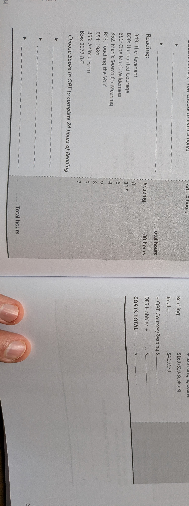

Cycle 11 · 10th-grade Spark · 2028–29
Cycle 11 · 10th-grade Spark — fire, shelter, water with your hands. Climax: multi-day field expedition after Wilderness First Aid. Journal + skills video are the proof.

Nights out are the adventure. Credentials and practice weekends come first — then NOLS / Outward Bound / TX–NM expedition.
The call: pack light, stay warm, treat water, and write what nearly went wrong.
Fire, shelter, water on a multi-day field expedition — Wilderness First Aid first.
| Window | He does | Links |
|---|---|---|
| Fall | WFA · kit · land nav | Red Cross / WFA |
| Winter → spring | Practice weekends · journal | Local land / mentors |
| Spring+ | Multi-day expedition | NOLS |
Every bookable gate, camp, class, and competition in one place. Register early — spring slots fill.
| Resource | Use for | Link |
|---|---|---|
| NOLS | Expedition courses | www.nols.edu/ |
| Outward Bound | Field programs | www.outwardbound.org/ |
| Red Cross / WFA | Wilderness First Aid | www.redcross.org/take-a-class |
| Modern States Biology | Optional CLEP | modernstates.org/course/biology/ |
| Modern States Humanities | Optional CLEP | modernstates.org/course/humanities/ |